OctoStudio is a free coding app that transforms how young people use mobile phones and tablets, enabling them to create their own stories and games anytime, anywhere. Children can take photos and record sounds, bring them to life with coding blocks, and send their projects to friends and family.
OctoStudio is a block-based coding app that enables students to make simple animations and games using characters and sounds that they choose. OctoStudio was developed by the Lifelong Kindergarten group at MIT Media Lab and is available for free on iPhones, iPads, and Android smartphones and tablets.
OctoStudio is a free app that you can download from the Google Play Store or Apple App Store.
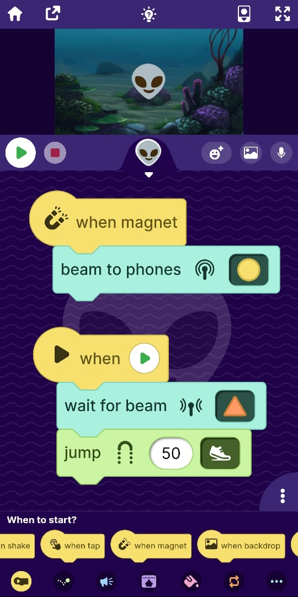
OctoStudio supports various phone sensors like magnet detection, tilt detection, etc. which you can integrate with your CodeSkool project. OctoStudio has radio mode, which uses BLE for communication between two devices. You can use this feature to create multiplayer games or enhance your OctoStudio project with CodeSkool Artificial Intelligence and Machine Learning Scratch coding blocks. We can read these BLE packets or send these BLE packets from CodeSkool IDE to communicate with the OctoStudio app.
As its hard for a PC to capture and broadcast such BLE packets, we will use a microcontroller to do this job. We will use a standard ESP32 board for this purpose.
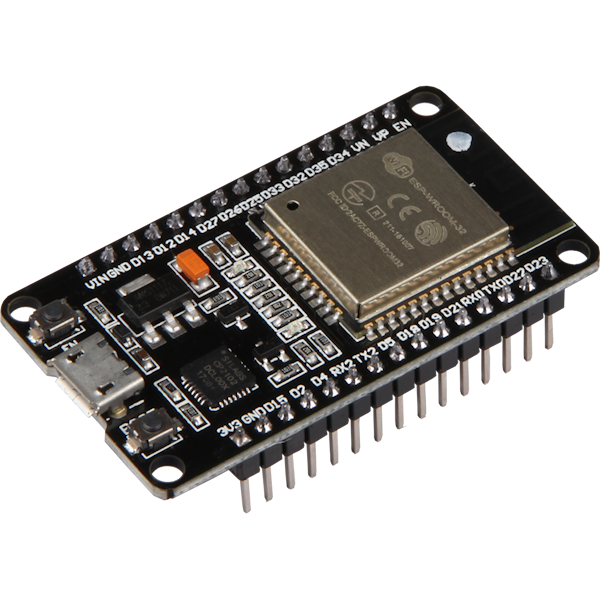
First we need to prepare our microcontroller, by flashing it with the firmware, which you can download from the OctoStudio extension in the CodeSkool extensions manager.
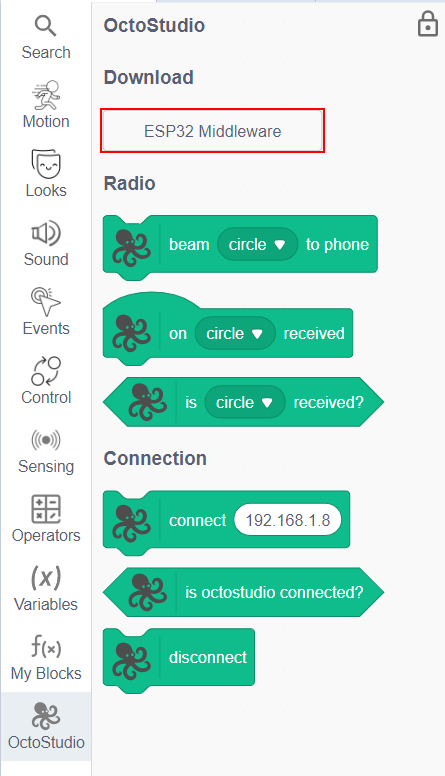
You would also need to download the Flash Download Tool. This tool is used to flash the firmware on the ESP32 board. Now connect your ESP32 board to your computer, run the flash download tool and select the chip type as ESP32.
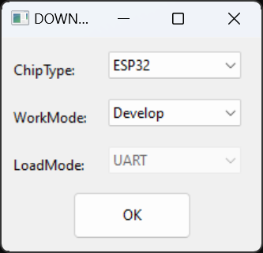
Then select the downloaded firmware and set the address to flash as 0x0000. Now click the start button to flash the firmware on the ESP32 board.
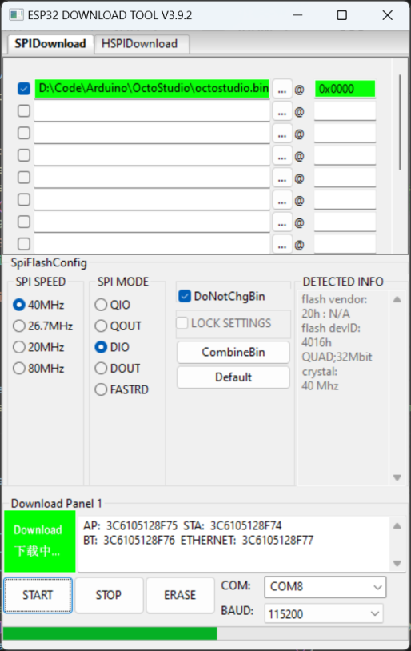
You need to press the BOOT button on your ESP32 device, and keep it pressed while you click the start button in the flash download tool. The flash download tool will start flashing the firmware on the ESP32 board. Once the flashing starts, you can release the BOOT button. After few seconds, the flashing will be complete and you will see the following screen.
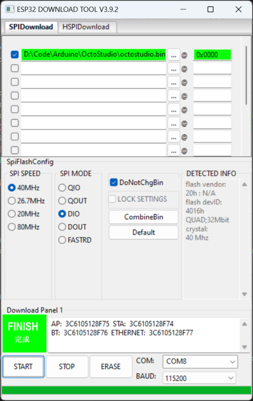
Now you can unplug your ESP32 device, and plug it again to the USB cable. You will see a new WiFi network with the name OctoStudio. Connect to this WiFi network. You will be prompted to enter the password, which is CodeSkool.
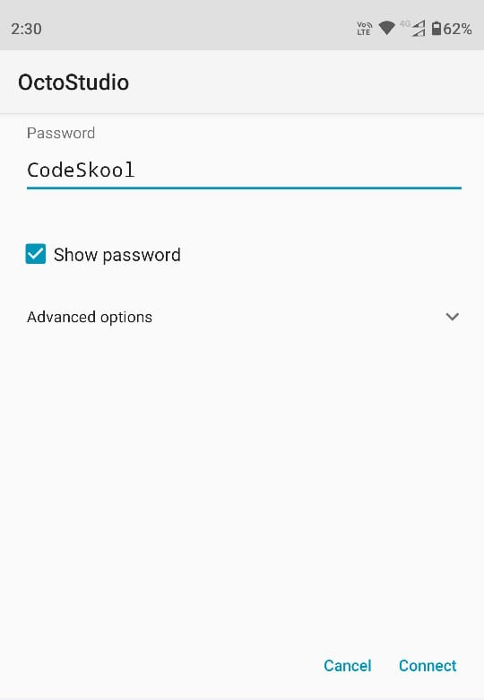
Once you are connected to this WiFi network, you will be promoted to Sign in to the WiFi network. You will be greeted with the following screen to configure your WiFi network.
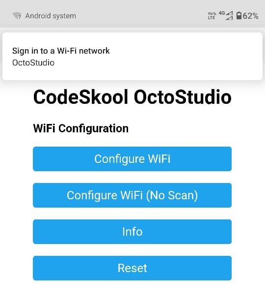
Select the Configure WiFi button and enter your home WiFi network name and password. Then click the Save button.
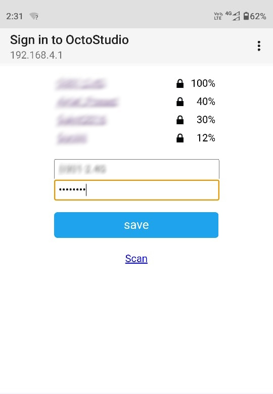
Your ESP32 device will now reboot and connect to your home WiFi network.
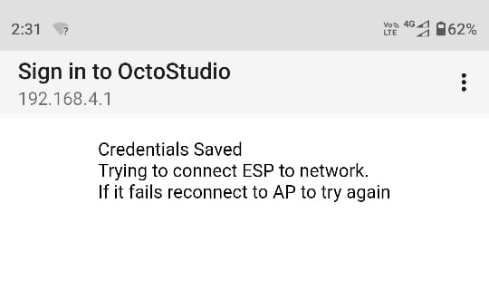
Now you can use Putty or some other tool to get the IP address of the ESP32 device. You can connect to the device serial port using the baud rate of 115200. You will see the IP address of the device in the serial monitor.
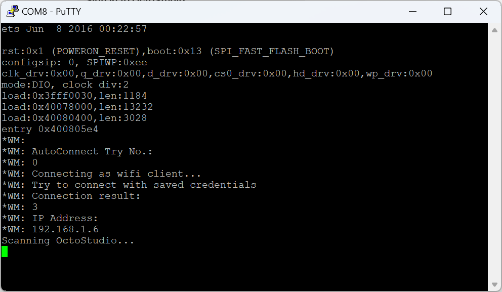
Now you can connect the ESP32 device to CodeSkool IDE by using the connect block from the OctoStudio extension. You need to enter the IP address of the ESP32 device in the text box of the connect block. Then you can use the various blocks from the OctoStudio extension to control the OctoStudio app.
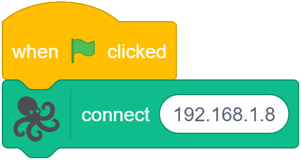
You can now use the various blocks from the OctoStudio extension to communicate with the OctoStudio app. You can use the beam blocks to send a shape to the OctoStudio app. In the OctoStudio app, you can use the wait for beam block to wait for the shape to be received from CodeSkool IDE.
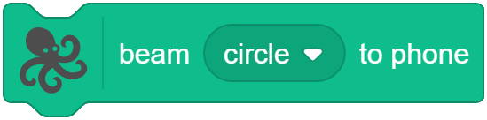
You can use the when shape received hat block to detect when the shape is received from the OctoStudio app using the beam to phones block.
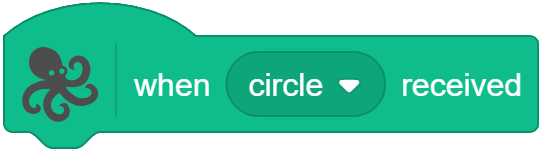
You can combine various CodeSkool and OctoStudio blocks to create your own games and apps.
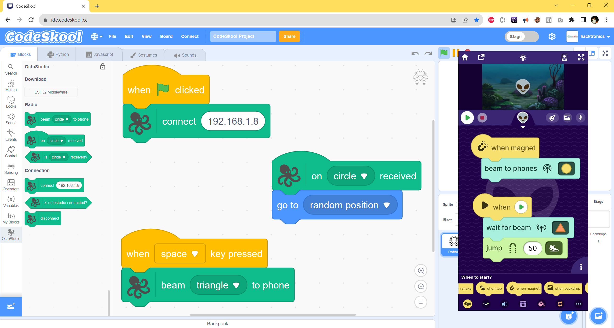